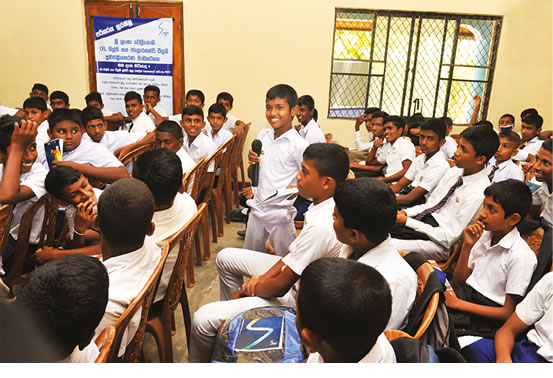
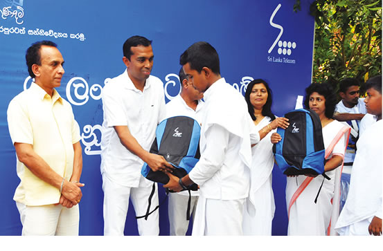
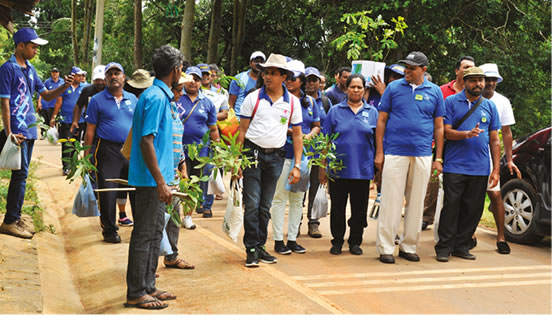

Management discussion and analysis
Social and Environmental Capital


As the national ICT solutions provider of Sri Lanka, SLT contributes to the development of the country by building the digital infrastructure that is so intrinsic to the economy and the lives of its inhabitants. As a responsible corporate citizen, SLT believes in upholding the communities and country it is a part of. While the country moves steadily towards digitalisation, SLT is working to ensure that no one will be left behind by reducing the “digital gap” and promoting the ease and convenience of digitisation to the general public. We initiate and champion social projects around the country that aim to achieve this goal.
Social initiatives
160 School Development Programme

The “160 School Development Programme” commenced in 2016 to commemorate SLT’s 160th anniversary. The programme has empowered 160 schools with infrastructure for information technology and telecommunications facilities, providing the next generation of students to engage in their studies with modern technology and access to global education. Schools were provided with a free broadband connection (LTE or ADSL) as part of the initiative which supports the country’s vision to build a smart education system. SLT also conducted an ICT lecture comprised of the Ordinary Levels syllabus and provided English books to school libraries to cultivate good reading habits in students.
Batticaloa Emergency and Accident Project
SLT was the Super Platinum Sponsor for the Batticaloa Emergency and Accident Project (BEAP); the Company invested USD 300,000 in the project to build an Emergency and Trauma Unit at the Batticaloa Teaching Hospital. The fully equipped unit is built to handle the large number of patients who seek treatment at the hospital, which treats approximately 700 patients every day. The upgrade will help the hospital better serve over 2 million people who live in Batticaloa, as well as the surrounding region including Trincomalee, Polonnaruwa, and Ampara.
e-Seniors workshops
The engagement of senior citizens is important in the country’s journey to digitalisation. To address the “digital gap” that exists in the growing segment of elderly people in the country’s population, SLT arranged workshops for senior citizens throughout the country to improve their ICT skills and enhance their wellbeing and independence.
Mobitel launches “DengueFreeChild” app
Mobitel developed the “Dengue Free Child” app in collaboration with the Ministry of Education and Ministry of Health, the University of Colombo, and Nanyang Technological University in Singapore to combat the spread of dengue among school children. The app, launched in March 2018, enables users to report cases of dengue or suspected incidents so that action can be taken in the reported areas and alert parents to take precautions. The app is currently available for Android users on the Google Play Store.
Nethrabhimana initiative
Mobitel launched a voice library as part of its Nethrabhimana initiative aimed at enhancing and enriching the lives of the visually handicapped. Upon its completion, the library was entrusted to the Sri Lanka Federation of the Visually Handicapped. The project combines story telling with modern technology on an Interactive Voice Response (IVR) platform and allows users to listen to captivating stories of five prominent Vesak Pandols on display in Colombo, enabling them to experience the splendour of Vesak from the comfort and safety of their homes. Mobitel collected the sum required for the project by seeking involvement and donations from the public and matching the donations made. Customers are encouraged to donate via voice or cash donation to extend this facility by sending an SMS to 6352.
Wayamba School Internet project
Mobitel and the North Western Provincial Council facilitated the “Wayamba School Internet Project” in Kurunegala in September 2018 to provide Internet to schools in the North Western Province. Students from schools in the area will be able to enhance their ICT literacy for better prospects as a result of Mobitel enabling an environment for better learning outcomes. Mobitel’s affordable and accessible learning platform is simple to set up and manage and is flexible enough to meet the requirements of any individual, classroom, school, or province. The initiative is part of Mobitel’s long-term vision for the digital empowerment of society, helping to build a knowledge-based society and bridging the digital divide in the country.
WomenWill programme
Mobitel, a member of the GSMA Connected Women initiative, partnered with the Google Business Group (GBG) Colombo to introduce the “WomenWill” programme to the female segment of its retailer network. The initiative aims to create economic opportunity for women everywhere. A full-day workshop, held at the Mobitel Innovation Centre, aimed to impart digital, leadership, and entrepreneurial skills, work-life balance, help women make the most of technology, get inspired, get connected, and help them grow their business. The workshop included group activities, hands-on experience with apps, discussions, and icebreaker sessions. As a result of the overwhelmingly positive feedback received from the event, Mobitel will seek to organise more sessions in various districts.
Cultural celebrations
Around the year, SLT celebrated several cultural festivals in the communities it operates within.
- SLT celebrated Thai Pongal by hosting events at the Sivananda Thapovanam ashram, a home for the destitute, orphaned, and handicapped children in Uppuveli, Trincomalee with a variety of activities on 12 January 2018. The harvest festival of Pongal is one of the most significant events in the year for the Sri Lankan Hindu community. 100 underprivileged children received a special lunch and sweets to commemorate the festive occasion, along with gifts and entertainment activities.
- SLT celebrated Vesak with a programme focusing on three areas: social, education, and environment. A School Seela programme was held at the Seelawimala School in Minuwangoda, with meals and porridge cooked with traditional rice for students, book donations to the school library, and broadband and Sisu Connect services provided to the school. A Pirivena programme at Galkanda Pirivena, Horampalla, Minuwangoda saw meals and porridge cooked with traditional rice offered to the monks, book donations to the library of the Pirivena, and the offering of Ata Visi Bodhi sets to the temple and ceremonial planting in the Temple premises.
- The Holy month of Ramadan is one of the most important events for the Muslim community in Sri Lanka; it is a month of giving and SLT recognises the importance of playing its role in raising public awareness and giving back to those in need. SLT hosted an Iftar meal for over 100 underprivileged Muslim children in 2018 and gave away gifts including school bags and stationery items as well as provided school books to the library of Muslim Balika Vidyalaya.
- SLT celebrated Christmas in 2018 with an event to provide meals and gifts to needy elders during the festive season, in keeping with the spirit of Christmas.

Customer Clubs
SLT is focused on being a good corporate citizen and carries out activities linked to its Sustainable CSR strategy centred around six main categories: social, sports, education, professional bodies, nature, and art & culture. SLT Customer Clubs are an innovative way for the Company to build loyalty through sustainable society-empowering CSR programmes and various activities around the six aforementioned areas. The Clubs are operated and handled independently by SLT customers under the supervision and cooperation of the Regional Telecom office and Corporate Relations section. Some of the activities carried out by SLT Customer Clubs include:
- The donation of a water filter system to the Thalassemia ward of Kurunegala Hospital by CCL Kandy.
- The “Planting for Water” Sinharaja Reforestation project by CCL Ratnapura.
- A new house for an underprivileged family by CCL Anuradhapura.
- An IT workshop for IT teachers by CCL Avissawella.
Environmental Initiatives
SLT is committed to the sustainability of our operations, including how they impact the environment around us. We constantly seek ways to mitigate or offset any adverse effects on the environment and operate in an environmentally responsible, economically sustainable manner. For instance, we reduce paper usage and wastage by relying on digitalising more of our internal processes and encouraging our customers to switch from paper bills to electronic bills.
These are some of the initiatives the SLT Group undertook towards the preservation of the environment:
PV Solar implementation
SLT initiated the implementation of nine photovoltaic (PV) solar sites in 2018. Together with the eight sites commissioned in 2017, the system has a total capacity of 876 kilowatts and generates an estimated 1,156-Megawatt Hours per year, resulting in an estimated saving of LKR 25.2 Mn. per year and a reduction in SLT’s carbon footprint by 821 tonnes per year. SLT will seek to pursue power purchase agreements with suppliers who wish to install PV solar panels on the rooftops of SLT
sites and sell energy to the Ceylon Electricity Board.
Additionally, SLT seeks to reduce energy consumption by building energy efficient structures and implementing LED lighting and inverter-type air conditioning at its sites.
| Site |
PV Capacity (kW) |
Annual Power Generation (kWh) |
Carbon Footprint (tonnes per year) |
| Moratuwa | 50 | 66,000 | 46.9 |
| Kotugoda | 60 | 79,200 | 56.2 |
| Welisara | 131 | 172,920 | 122.8 |
| Kaduwela | 25 | 33,000 | 23.4 |
| Hambantota | 30 | 39,600 | 28.1 |
| Ratmalana | 90 | 118,800 | 84.3 |
| Mattakkuliya | 15 | 19,800 | 14.1 |
| Wattala | 50 | 66,000 | 46.9 |
| Kelaniya | 25 | 33,000 | 23.4 |
| Chilaw | 40 | 52,800 | 37.5 |
| Maradana | 90 | 118,800 | 84.3 |
| Kuliyapitiya | 15 | 19,800 | 14.1 |
| Anuradhapura | 90 | 118,800 | 84.3 |
| Ja-Ela | 35 | 46,200 | 32.8 |
| Kurunegala | 55 | 72,600 | 51.5 |
| Gampaha | 30 | 39,600 | 28.1 |
| MV-Exchange | 45 | 59,400 | 42.2 |
| 876 | 1,156,320 | 821.0 |
CFL and FTL recycling programme
SLT is a signatory of the ‘Minamata Mercury Convention” and is committed to reducing mercury pollution. Through the compact fluorescent lightbulb (CFL) and fluorescent tube lights (FTL) recycling programme commenced in 2017, SLT aims to prevent environmental pollution and help preserve the ecological balance.
| Total CFL collected | 1,848 |
| Total FTL collected | 1,832 |
| Other | 93 |
| Total Mercury reduction (mg) | 15,092 |
RO Water implementation at SLT Headquarters
SLT implemented a reverse osmosis (RO) water solution at the SLT Headquarters at a project cost of LKR 120,000 that is estimated to result in a saving of LKR 2.5 Mn. per year. Benefits from the initiative include the saving of time and space, a low payback period of approximately seven months, and a reduction in plastic pollution, as well as being healthier for employees.
Reforestation drive
Mobitel partnered with THURU, one of the 10 finalists of Season 2 of Kotiyak Vatina Adahasak, Sri Lanka’s first-ever innovation and entrepreneurship-based tech reality TV show. THURU is a gamified platform that encourages users to plant trees as part of a reforestation drive to plan 2 million trees by the end of 2020. The platform will make use of intelligent and forward-looking technologies such as Narrowband IoT, blockchain, and Artificial Intelligence (AI). Users can plant trees and upload images to the app which will then award points and rank the user on a leaderboard by calculating the oxygen output based on the plant type and age. The app will also help users to link up with like-minded nature lovers across the globe.
